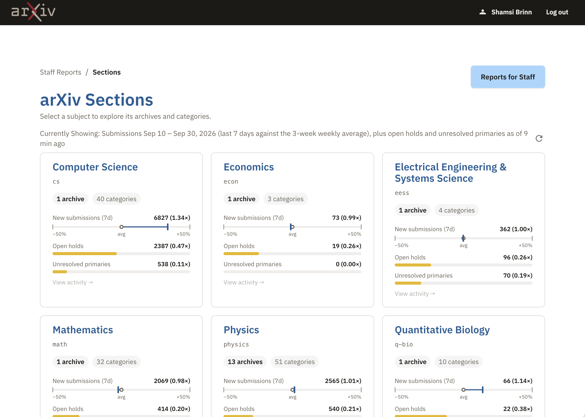
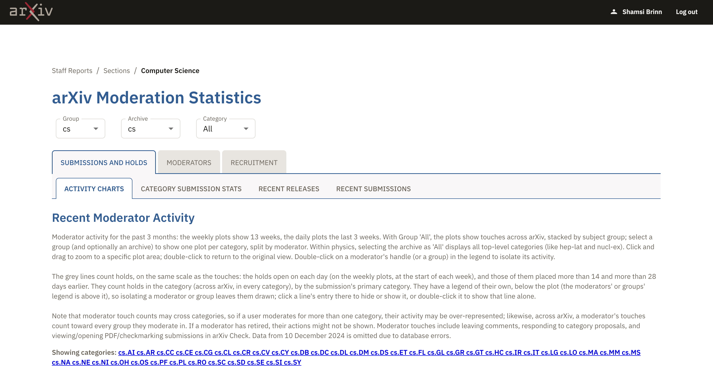
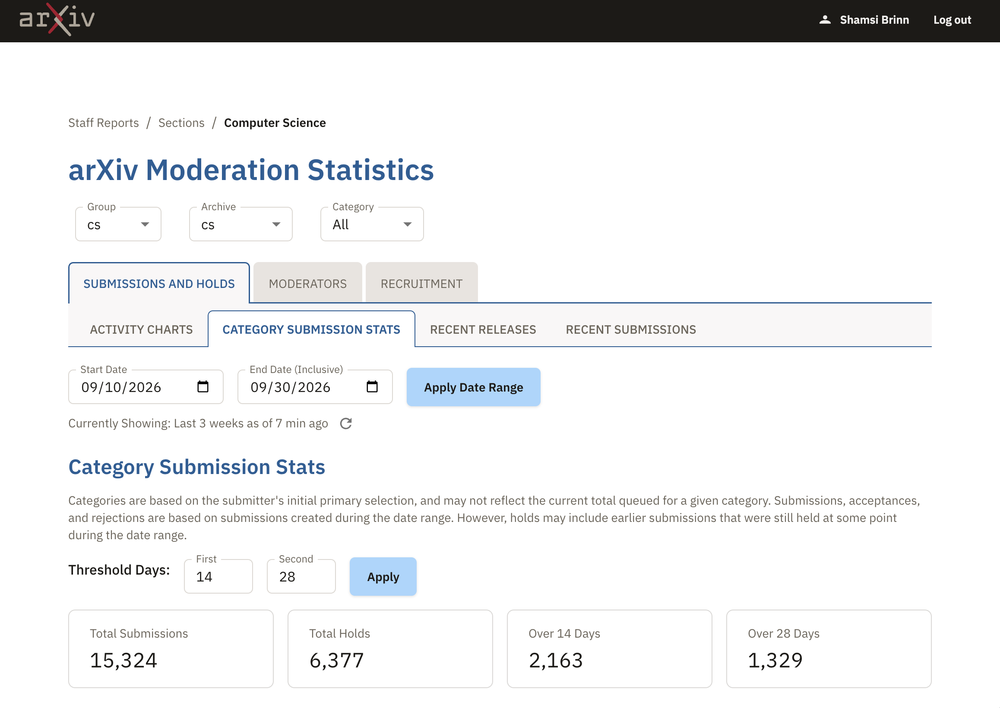
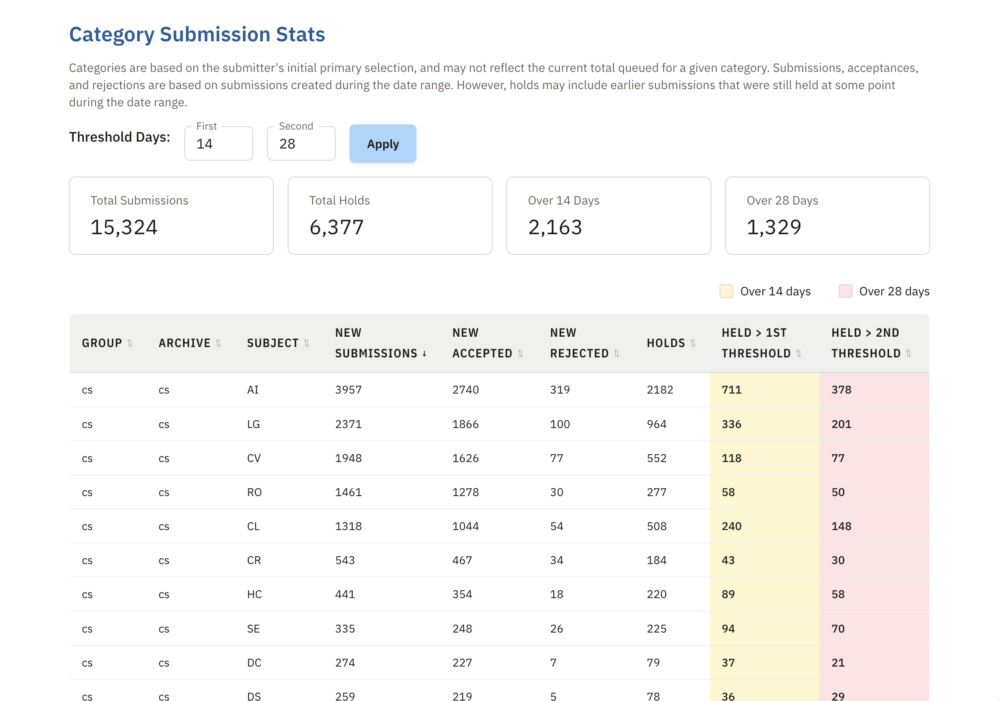

Step 1 of the dashboard work: what Christopher's screens for dev.arxiv.org/activity/ use, how each element maps to the design system, and what the design system should change or add. The rebuild comes after these decisions.
Sections home

Moderation statistics, charts tab

Category submission stats tab

Category table

All three use the same table. Only the header row changes.
A. Today
| Subject | New submissions | Holds |
|---|---|---|
| AI | 3957 | 2182 |
| LG | 2371 | 964 |
11px, 600, Library Grey on Card Grey. 5.12:1 light.
B. Proposed default
| Subject | New submissions | Holds |
|---|---|---|
| AI | 3957 | 2182 |
| LG | 2371 | 964 |
12px, 600, Repository Brown on Card Grey. 15.22:1 light. Uses --ds-text, so dark mode follows.
C. Christopher's (estimated)
| Subject | New submissions | Holds |
|---|---|---|
| AI | 3957 | 2182 |
| LG | 2371 | 964 |
About 13px, 700, wide letter spacing, Repository Brown. 15.22:1 light.
.ds-table--dense, not for its size.Recommend: yes, one rule with one exception that comes from the markup.
| Element | Design system | Status | Note |
|---|---|---|---|
| Site header | .ds-site-header | Changed since | Name and Log out in the bar is the older pattern. Current: first-name greeting and an Account menu holding Log out. |
| Breadcrumb | none | Rule conflict | DESIGN-POLICIES: breadcrumbs only on pages without secondary navigation. These pages have tabs, so the breadcrumb goes. |
| Page title in Archival Blue | h1, h2 use --ds-text | He changed it | Blue headings read as links on a page with many links. Decide in the headings proposal. |
| Filter selects (Group, Archive, Category) | .ds-field, .ds-label, .ds-input | He changed it | His labels sit in the border (outlined style). Ours sit above. A row of short fields fits .ds-form or a .ds-btn-group of fields. |
| Two rows of tabs | none (.ds-subnav is page navigation) | Missing | Tabs that switch views on one page need a tabs component (role="tablist"). Two levels of tabs is the densest part of the page; the rebuild should test one level plus the filters. |
| Section heading and long intro text | h2, p | Exists | The text is long; the rebuild can move the method notes into a disclosure. |
| "Showing categories" list of links | .ds-link-list | Exists | Category names keep their case (STYLE.md). |
| Date fields and Apply button | .ds-field, .ds-btn-primary | Exists | Same outlined-label difference as the filters. |
| "Currently showing … 7 min ago" and refresh | .ds-hint-like text, .ds-btn-icon | Exists | Refresh needs a visible or screen-reader name. |
| Stat cards (label and big number) | .ds-card in .ds-card-grid | Missing part | The card exists; a large-number display does not (noted as a gap on the brand page too). |
| Legend with colour swatches | none | Missing | Needed wherever colour marks data. The tint must never be the only signal. |
| Sortable table | .ds-table, .sortable | Exists | See header options above. |
| Threshold columns tinted yellow and pink | --ds-warning-bg, --ds-error-bg | Tokens exist, use is new | Tinting a column or cell by value is not documented. Decide in the tints proposal. |
| Subject cards | .ds-card, .ds-card-grid | Exists | Card titles in Archival Blue: headings proposal. |
| Archive code (cs, q-fin) | inline code or mono text | Exists | Plain mono text, not inline code styling. |
| "1 archive" and "40 categories" pills | .ds-tag | Exists | His first pill is bold and the second is not; tags have one weight. |
| Range gauge against the average | none | Missing | A meter: value, average marker, and -50% / +50% ends. |
| Progress bars, yellow and red with a warning icon | none | Missing | Also a meter. Red with an icon over the threshold is right: colour is not the only signal. |
| "View activity →" link in grey | links are Link Blue | He changed it | A grey link reads as disabled. Use a normal link. |
| "Reports for Staff" button | .ds-btn-primary | Exists | A primary button for navigation; a link may fit better. |
| Footer | .ds-site-footer | Changed since | His dots are the faint version, fixed on 2026-09-28. |
.ds-subnav, which links between pages..ds-card.